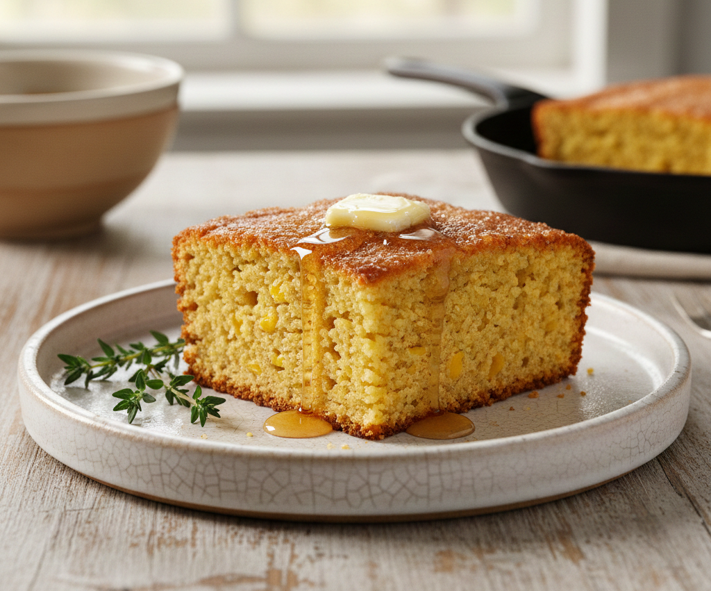

Golden Sweet Cornbread
Ingredients
- 1 cup all-purpose flour
- 1 cup yellow cornmeal
- 2/3 cup white sugar
- 3.5 teaspoons baking powder
- 1 teaspoon salt
- 1 cup milk
- 1.3 cup vegetable oil
- 1 large egg
Directions
- Preheat the oven to 400 degrees F. Lightly grease a 9-inch round cake pan
- Whisk flour, cornmeal, sugar, baking powder, and salt together in a large bowl.
- Add milk, vegetable oil, and egg; whisk until well combined
- Pour batter into the prepared pan.
- Bake in the preheated oven until a toothpick inserted into the center of the pan comes out clean, 20 to 25 minutes.
- Slice and enjoy!
Notes
- Crispy Edges: For a crispier crust, heat the greased pan in the oven for 5 minutes before pouring in the batter. The batter should sizzle when it hits the pan!
- Don't Overmix: When combining wet and dry ingredients, mix just until the flour disappears. Overmixing can make the cornbread tough and dense instead of fluffy.
- Spicy Variation: Add 1/2 cup of shredded cheddar cheese and 1/4 cup of diced jalapeños to the batter for a savory kick.
- Storage: Store leftovers in an airtight container at room temperature for up to 2 days, or in the refrigerator for up to 5 days.
Nutrition
Serving Size: 8 servings (1 slice each)
Calories: 245
Fat: 10 g
Carbs: 34 g
Protein: 5 g